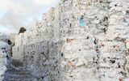

De: La Frikipedia, la enciclopedia extremadamente seria.
De: La Frikipedia, la enciclopedia extremadamente seria. De: La Frikipedia, la enciclopedia extremadamente seria.
|  | ATENCIÓN Este artículo necesita ser reciclado para preservar el medio ambiente frikipédico por defecto para fines ecológicos, antes de que sea vilmente borrado por el administrador de turno. Sírvase llamar a los de Greenpeace o hacerlo usted mismo entrando en "Artículos por reciclar". |
el comandante supremo hijo de son pany de travis touchdown (violacion de son pan a travis) el comandante supremo nacido el 16-9-1995 en la habana cuba cuando nacio este niño mostro una clara predilecion por la comida ya que prefería comer a cualquier cosa , el comandante supremo aprendió las técnicas de lucha de su madre y de chuck norris (fue su aprendiz)desarrollo sus propias técnicas como el zaidoken o el chuck-no-ken estas tecnicas desarrolladas por el comandante supremo lo convirtieron en un peligroso enemigo para quien osase retarle.
la mujer multiusos esta chica hermana de jesucristo y hija de jose en vez de maria esta chica tiene una arma multiusos creada por el espíritu santo que sirve para cualquier cosa , esta chica te lanzara partes de su casa en especial la puerta de su casa.
giovani el capitán de la división, giovani un seminija, chileno ,con nacionalidad italiana ,que vive en España y con apellidos vascos ,es el capitán de la división B del P.A.T.O tiene una guitarra con la que te puede destruir si le apetece este seminija es verdadero protagonista de la leyenda de ulises.
eddie pokemos numero 983721,23 evolucion numero 5 de magneton mas bien conocido como capitaan de la division d del P.A.T.O keni personaje de me llamo earl,eddie es el emperador de la india (aunque ronaldo y el gran kaly preparan un golpe de estado) y nacido en el limite de cataluña y valencia .Eddie es el capitán de la división C es el técnico de armamentística del P.A.T.O y de creación de virus informáticos como el C.A.R.A.C.O.L y también de su arma llamada P.E.N.E(Poderoso y eficiente neo-plasma de Eddie) eddie por estaña razón se parece demasiado a kenny de me llamo earl
el primer atentado del P.A.T.O :fue el secuestro de hannah montana el cual fue fallido por el mero echo de de que hannah montana se puso a cantar cuando la secuestraron y hubo miles de muertos a 10 km a la redonda
el segundo atentado del P.A.T.O: fue pintar una roca muy grande para declararla suya y declararle la guerra a disney y a ee.uuel tercer atentado del P.A.T.O: conseguir armas nucleares atentado fallido debido a que el uranio no cuesta 25 cnt por que el presupuesto del pato en esa época no superaba los 30 cnt
el cuarto atentado del P.A.T.O:fue intentar que yamcha se uniera al P.A.T.O y se convierta en el segundo al mando de la nueva división c, yamcha reto a Javier pequeño a un serio que si le ganaba yamcha se uniría al P.A.T.O
El matón favorito del P.A.T.O las razones son simples típica frase para gigante gigante partele las piernas resultado piernas partidas
la única rusa-choni del mundo pero aun a si el P.A.T.O a hecho una excepcional admisión con ella en el P.A.T.O sabiendo que el comandante supremo la odia devido a que su deporte favorito es asusta al comandante supremo por esta razón el comandate la odia
lo único que se sabe de el esque parte piernas como ninguno ni habla ni sonríe y no te deja bailar flamenco
uno de los matones preferidos por el P.A.T.O aunque se dedique a vencer a sus enemigos bailando breack o haciéndoles el rasenganes muy querido por los dirigentes del P.A.T.O
ceraman el hombre en calzoncillos y el hombre que siempre se depila a la perfeccion es el super heroe recluta por el P.A.T.O para luchar contra la ingusticia de disney y intetar para las violaciones del comandante supremo secreto (pedobear) vencer el mal probocado por justin biber y los zombis que crea hanna montana y derrotara a su malvado enemigo el pato donal y su gran aliado de las bavir lucha contra la ingusticia del mundo si algun dia tienes un problema grita ceraman el hombre en calzoncillos y el y sus barbis a salvarte
este hombre es uno de los mayores maestros del disfraz y de las caras raras este hombre fue capaz de disfrazarse de justin biber y colarse en el cuartel general de disney y ponerle una bomba
es un loco que mira fijamente al sol y predice el futuro comenta al alto mando del P.A.T.O las operaciones encubiertas como y cuando se devén hacer por ahora sus 12.345,2 visiones han sido correctas
Murger otaku haciendo cosplay de sefirot y con un gran odio acumulado hacia el P.A.T.O devido a que se cree sefirot el personaje de final fantasy tambien aparecido en kindow hearts y por eso quiere acabar con el P.A.T.O por que se cree que ellos quieren acabar con este juego esta loca que va con una katana muy larga por la calle intentando matar a los miembros del P.A.T.O es la que mas bajas a creado en el P.A.T.O unas 3
este loco es un enemigo del P.A.T.O que nos es capaz de admitir que buzz no existe
si el P.A.T.O odia profundamente a tu abuela en tanga chupando limón y probablemente estén planeando algo para matarla Cobras.jpg
los piojos son los mayores enemigos del P.A.T.O por que son los creadores de el antivirus del virus caracol llamado S.A.L este antivirus salvo muchos ordenadores de el C.A.R.A.C.O.L pero no lo elimino y aun menos nos libro de su amenaza por eso si algun dia ves un caracol en tu ordenador quiere decir que pertenece al P.A.T.O y en resumidas cuentas a pedobear y yamcha
la rubia gorda que corre eternamente por que el loco que mira fijamente al sol la maldijo esta corriendo eternamente debido a que el loco que mira fijamente al sol la maldijo por tocar la comida del comandante supremo por que una de las reglas del P.A.T.O es la comida del comandante supremo no se toca y por eso estará haciendo el test de cooper hasta que sus piernas se partan en 2 del cansancio algo que nunca pasara
la cobra gay que pico a Sasuke Uchiha , justin biber , Ash Ketchum , bob esponja y a patricio estrella es unos de los enemigos mas buscados del P.A.T.O devide a que impide la heterosexualidad entre los miembros del P.A.T.O en la acutalidad el numero de miembros que an sido picados por esta cobra son 12
el líder de la guardia del comandante supremo y altamente cualificado para cambiarse de peinado ,ganarte en serios y hacerte el ataque del Puño de la zoofilia con lobos lobos y lanzarte una bombilla aparentando que es una bola de energía
bobobo el liberta cabelleras es el segundo miembro de la guardia del comandante supremo del P.A.T.O , el segundo miembro mas admirado por el comandante , su unión al P.A.T.O debida a que el emperador bola de billar 4 se unió a disney para dominar el mundo bobo decidió unirse al P.A.T.O para liberar al mundo de disney de los calvos y de las inculturas rules
MacGyver es el segundo miembro de la guardia personal del comandante supremo del P.A.T.O macgiver fue reclutado por el P.A.T.O para luchar contra los goa'uld mas rexulones de su imperio y para aprovechar los chicles y los clips que sobraban ,mac giver se dedica ha hacer reactores nucleares con un vaso de plástico , un chicle un clip y un bolígrafo y lanzárselo a los que se atrevan a tocar la comida del comandante supremo
un pato ninja es el cuarto y ultimo miembro de la guardia del comandante supremo este pato es el único ninja todoterreno subterráneo , submarino , terrestre, aéreo y puede ir sobre el agua no hay ninja mejor este pato nija que le encanta la musica de los años 70 es capaz de matarte con una pluma y sin decir cua por ejemplo ahora mismo te ha matado por conocer su existencia
kagada corporation la empresa que fabrica las armas ordenadores todo lo que usa el P.A.T.O con una calidad realmente aluciantemente buena y unos precios realmente bajos (que esta empresa sea tam poco conocida es devido a su nombre)
la brigada antiacanis la organizacion terorista de la que desciende el P.A.T.O es uno de los mejores aliados del P.A.T.O juntos an conseguido acabar con toda la rexuloneria de japon (por esa razón en japón no hay canis)y pronto libraran a españa de los canis(vale es mentira es imposible salvar a españa pero lo intentaremos)
El tipo que te golpeo sin razón aparente hace apenas algunas horas es uno de los mejores aliados del P.A.T.O por que golpea a los canis y a los sirvientes de disney sin razón aparente pero les golpea y te esta esperando a la salida de tu casa por ser un sirviente de disney y te golpeara sin razón aparente
la comida del comandante supremo no se toca
la comida que el comandante supremo ah robado no se toca
si ganas al comandante supremo en un serio te mataran
tienes piojos en la cabeza despide te del pelo
si te encuentras a pecholobo no lo mires
como toques la comida del comandante morirás
...que la mascota del P.A.T.O. es un oso?
...que giovanni tiene el poder de matarte con la mirada sin mirarte?
...que el comandante supremo te matara si tocas su quitas a comida?
...que la chica multiusos se rie como un pato?
...que Yamcha es unos de los matones de la división C?
...que el P.A.T.O ahora saca el dinero del mismo lugar que phileas and ferb?
...que el comandante supremo es el verdadero creador de todos los pokemon?
...que giovani es el padre de ash ketchum?
...que gigante y comandante supremo te ganan al dragon ball cogiendose a mstr.satan y tu con super sayan 10?
...que eddie tubo un papel en me llamo earl?
...し、世界を支配する鴨を停止するには何を行うことができます
...que el P.A.T.O no tiene ni idea de lo que pone hay arriba
...que la rusa loca es la mujer del ruso de rocky balboa?
...que mac giver es el hermano mayor de la chica multiusos?
...que el P.A.T.O cuando te vea te dara una paliza sin razón?
Autor(es):